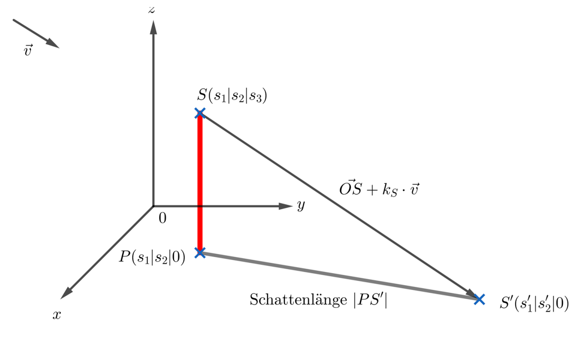

Projektion eines Punktes auf eine der Koordinatenebenen (Schattenprojektion)¶
Grundidee der Schattenprojektion¶
Die Schattenprojektion beschreibt, wie ein Punkt oder ein Objekt unter dem Einfluss paralleler Lichtstrahlen (z. B. Sonnenstrahlen) auf eine Ebene (z. B. den Boden) projiziert wird.
Die Richtung der Lichtstrahlen wird dabei durch einen Richtungsvektor angegeben.
Vorgehensweise bei Schattenprojektionen¶
-
Gegeben ist ein Punkt \(S(s_1|s_2|s_3)\) sowie ein Richtungsvektor \(\vec{v}\), der die Richtung der Lichtstrahlen beschreibt.
-
Gesucht ist der Schattenpunkt \(S'\), der auf einer vorgegebenen Ebene liegt.
-
Man stellt eine Gerade durch den Punkt \(S\) in Richtung des Richtungsvektors \(\vec{v}\) auf: \(\vec{x} = \overrightarrow{OS} + k \cdot \vec{v}, \quad k \in \mathbb{R}\ldots (g)\)
-
Für den gesuchten Schattenpunkt wird die Ebenenbedingung eingesetzt
(z. B. \(z = 0\) für die \(xy\)-Ebene). -
Dadurch erhält man eine Gleichung zur Bestimmung des Parameters \(k\). Durch Einsetzen dieses Wertes in die Geradengleichung wird der Schattenpunkt \(S'\) berechnet.

Beispiel:¶
Lösung¶
Der Schattenpunkt liegt auf der Geraden durch \(S\) in Richtung des Richtungsvektors \(\vec{v}\):
Komponentenweise:
Da der Schattenpunkt auf der \(xy\)-Ebene liegt, gilt \(z=0.\)
Einsetzen von \(k=8\) in die Geradengleichung:
Der Schattenpunkt der Mastspitze liegt bei \[ S'(42|21|0). \]